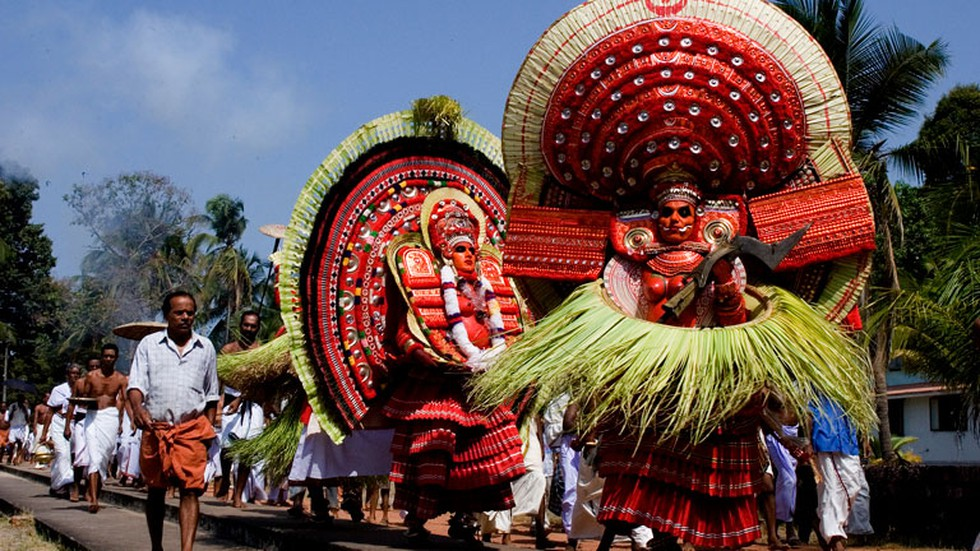

kannur
Kannur's rich and vibrant landscape is host to the great Arakkal Kettu museum, former residence of the only Muslim royal family in Kerala, the Arakkal Ali ...
District of Kannur - Land of Theyyams
Kannur is a culturally and historically rich district in the north of Kerala. It has long been a port and trade center and has had trade relations with ...
major tourist spots in kannur
Payyambalam Beach in Kannur
It is one among the five beaches that is collectively known as Kannur beach. Long stretch of sandy walkways and recreational facilities of this beach make is a ...
St. Angelo Fort or Kannur Fort
St. Angelo's Fort in Kannur district is a massive triangular laterite fort also known as the Kannur Fort. It was constructed by the first Portuguese Viceroy ...
Dharmadam Island at Thalassery, Kannur | Kerala Tourism
dharmadam-island
Dharmadom Island located near Thalassery is a picnic spot in Kannur, known for its secluded be
Thalassery Heritage Project
A walk past the centuries is what this enduring historical monument named St Angelo Fort, popularly known as Kannur Fort, offers to the traveller. Explore more
Zone : South
Telephone Access Code: +91 497
Kannur is most renowned for the Theyyam performances in its temples. This magnificent art form plays an integral part in the culture of this Northern Kerala district. Formerly known as Cannanore, Marco Polo christened it a ‘Great Emporium Of Spice Trade’. Kannur has, since time immemorial, been hailed as an influential sea port. Legend has it that it had interactions and trade relations with the rest of the world since the time of King Solomon to the Greeks, Arabs and Romans. It has a plethora of forts, temples, beaches and wildlife sanctuaries that regularly attract visitors. Major festivals and events are held throughout the year and this is among the best places in Kerala to spend your vacation in.
Tourist Information Offices:
District Tourism Promotion Council, Taluk Office Compound, Kannur Ph: 2706336, 2702466
DTPC, Tourist Information Centre, Railway Station Ph: 2703121, Email: info@dtpckannur.com, Department of Tourism Ph: 2702515, Website: www.dtpckannur.com